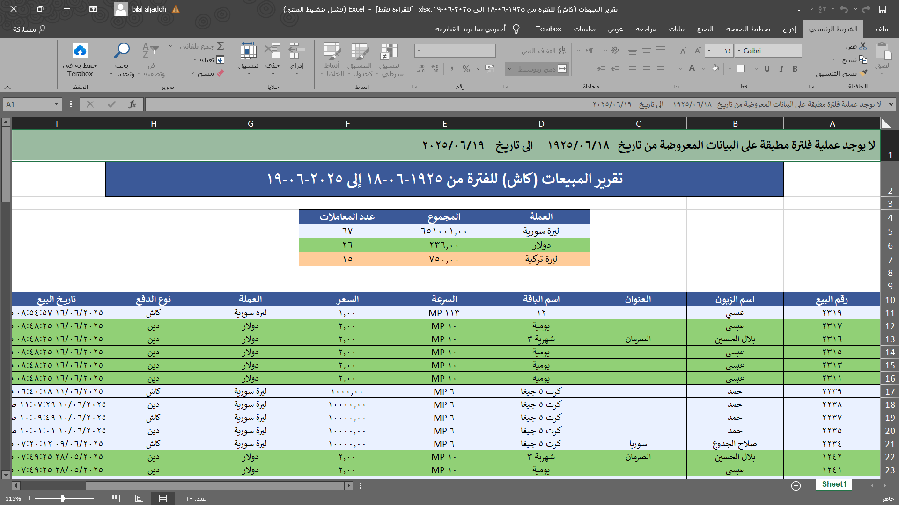
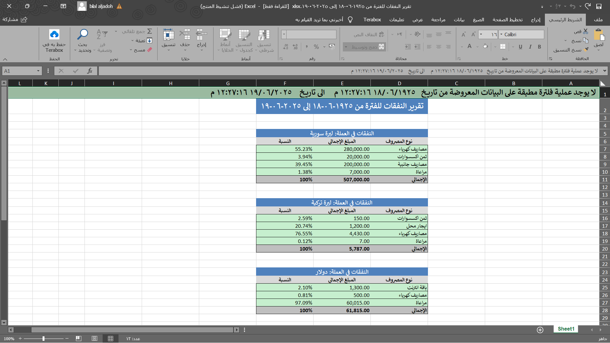
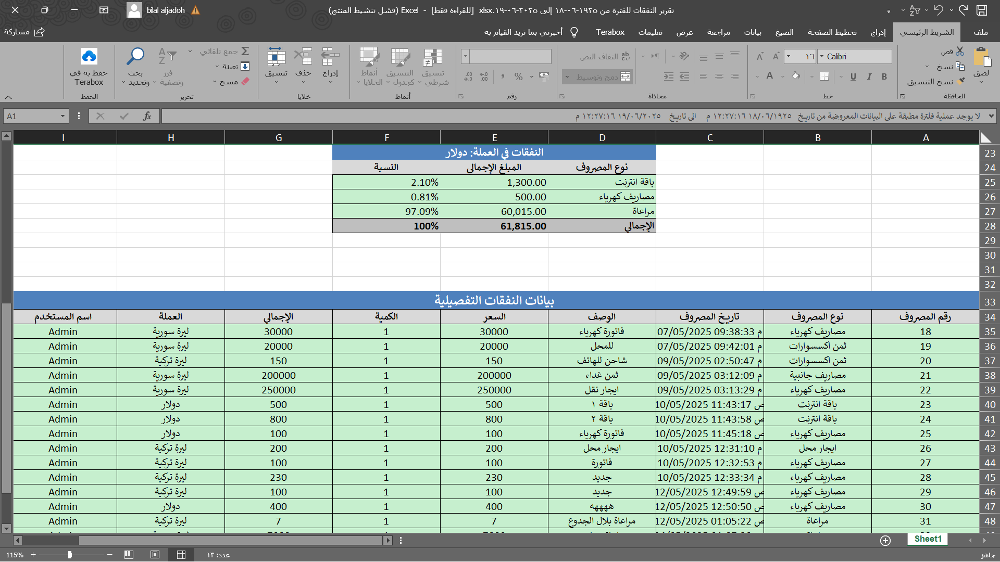
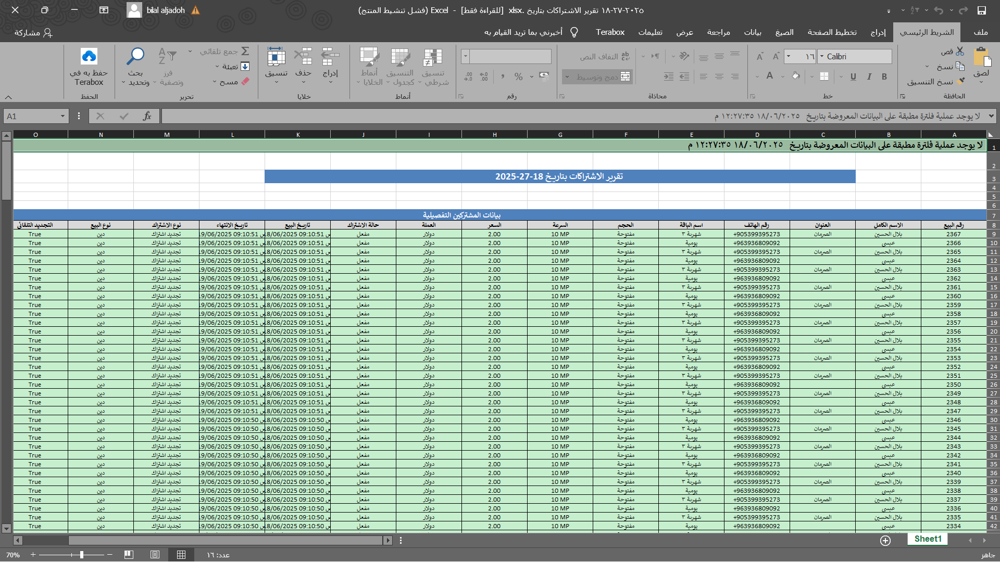
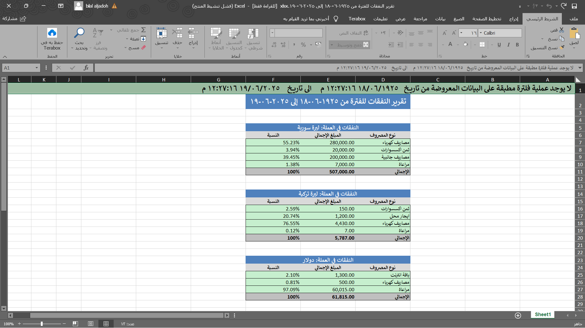
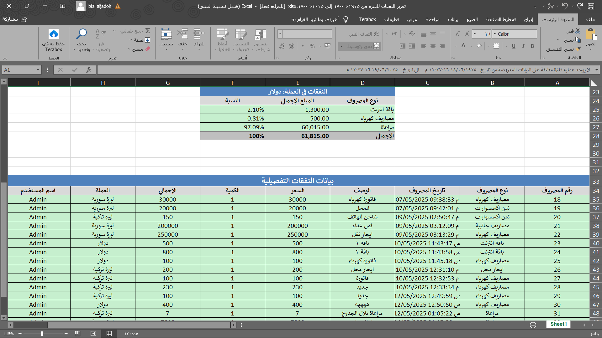
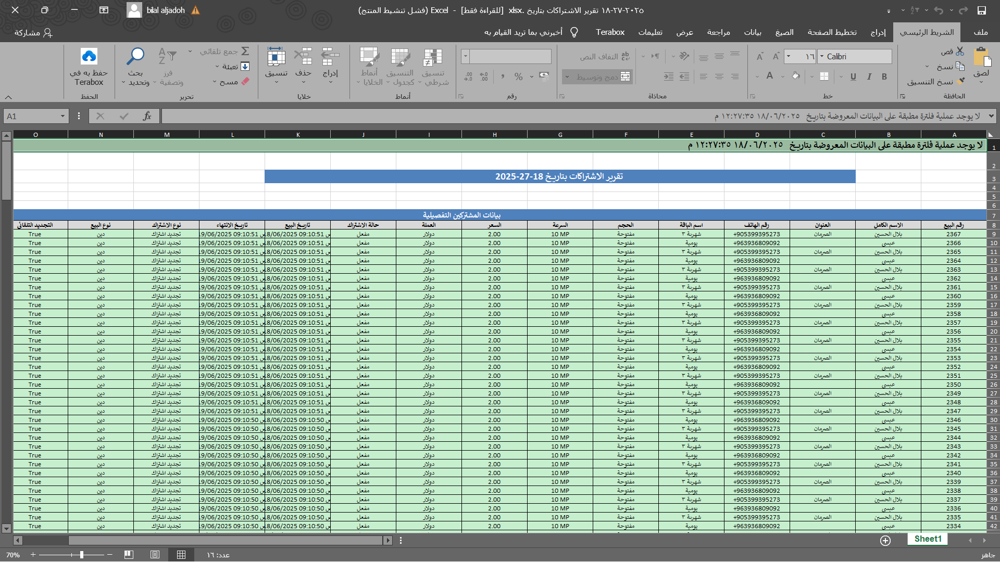

تصدير احترافي للتقارير بصيغة Excel
في ControTik، لم يعد تصدير البيانات مجرد ميزة ثانوية، بل هو جزء أساسي من تجربة الإدارة الاحترافية، مصمّم بعناية لتقديم ملفات Excel موثوقة، آمنة، وسهلة القراءة والمشاركة.
📁 تصدير كل الأقسام: يمكن تصدير البيانات من جميع أنظمة ControTik، بما في ذلك:
- المبيعات (كاش وديون)
- الديون وسجلات الدفعات
- المصاريف بأنواعها
- الأرباح وسحوبات الشركاء
- الاشتراكات المنتهية أو المتأخرة
- سجلات الفلترة والرسائل
🔒 ملفات محمية ضد التعديل: يتم إنشاء ملفات Excel غير قابلة للتعديل (Read-Only)، وذلك للحفاظ على مصداقية التقارير، ومنع أي تلاعب داخلي أو خارجي بالبيانات بعد تصديرها.
📊 شاملة وتفصيلية: يحتوي كل ملف Excel على:
- البيانات الكاملة والمفصلة لكل سجل
- خانة لنتيجة الفلترة (مفلتر أو غير مفلتر)
- نطاق البيانات الزمني المستخدم
- العملة المستخدمة إن وُجدت
- رؤوس أعمدة عربية منسقة
🧠 ذكية عند الفلترة: عند تطبيق فلترة مركّبة (مثلاً ديون بالدولار خلال آخر 7 أيام)، يتم توثيق هذه الفلترة داخل الملف في الأعلى، مما يساعدك على فهم سياق التقرير لاحقًا دون الحاجة للرجوع للنظام.
🖨️ جاهزة للطباعة أو الأرشفة: يمكن استخدام هذه الملفات مباشرة في التعاملات الإدارية، مع الشركاء، أو حتى ضمن تقارير رسمية. الملفات قابلة للطباعة ومنسقة تلقائيًا لسهولة القراءة.
💼 أداة موثوقة لاتخاذ القرار: بفضل تنظيم الأعمدة، حماية المحتوى، ووضوح المعلومات، تصبح تقارير Excel في ControTik أداة حقيقية لإدارة الأعمال وتحليل الأداء.
أمثلة عن التقارير التي يتم تصديرها :
 




